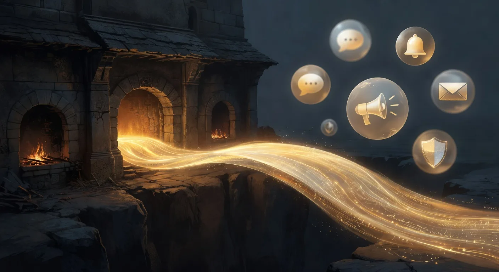

The Remote Bridge
Forward hub events off-box. Approve slices from your phone. One config, four channels.
551b850, 5b5a8e7; extended in later phases). Six channels supported out of the box: Telegram, Slack, Discord, Microsoft Teams, PagerDuty, and OpenClaw (Slack / Teams / PagerDuty / Email also ship as installable notify-* extensions under extensions/). Generic webhook routing, per-channel rate limits, and a live config watcher on the dashboard's Notifications subtab.
Why a Remote Bridge?
Plan Forge runs inside your IDE, but some decisions are not IDE-shaped. A reviewer flagged a drift anomaly at 2 AM. A quorum tie needs a human tiebreaker. An incident fired after you closed the laptop. The Remote Bridge forwards hub events to the places you already have notifications, Telegram, Slack, Discord, and supports inline approval / reject flows for the events that need a human.
![Remote Bridge fan-out: WebSocket Hub events (approval-requested, incident-fired, drift-alert, slice-failed, quorum-tie) flow into forge_notify_send router which applies per-channel rate limits, severity filters, and message templates from .forge.json#bridge. Router fans out to 6 channels: Telegram, Slack, Discord, Microsoft Teams, PagerDuty, OpenClaw. Telegram, Slack, Discord, and OpenClaw support inline approval flows; Teams is webhook-only; PagerDuty receives incidents only. User responses flow back as approval-resolved hub events that resume paused slices, close incidents, or break quorum ties.](assets/diagrams/remote-bridge-fanout.svg)
The Four Channels
| Channel | Best for | Approval flow |
|---|---|---|
| Telegram | Solo devs, inline buttons on your phone | ✓ Inline buttons (approve / reject) |
| Slack | Team channels, rich attachments, threading | ✓ Block Kit buttons |
| Discord | Community + OSS projects, embeds | ⚠ Message-based (no inline buttons) |
| OpenClaw | Agent-to-agent coordination (v2.41+) | ✓ Handoff contract |
Event Routing
Every hub event carries a channels array. A single event can fan out to multiple destinations:
{
"type": "drift-alert",
"severity": "high",
"channels": ["telegram", "slack"],
"summary": "Drift score dropped from 0.91 → 0.62 after slice 04.2",
"approval": {
"required": true,
"options": ["continue", "pause", "rollback"]
}
}Routing is driven by a channels filter on severity and event type. High-severity LiveGuard events (secret found, env key mismatch, drift ≥ threshold) route by default; informational snapshots do not.
Approval Flow
For events with approval.required=true, the bridge renders interactive buttons (where the channel supports them). When a user clicks a button, the response flows back into the hub as an approval-response event with {channel, platform, user, decision, timestamp}. The orchestrator consumes that event to resume, pause, or roll back the run.
551b850) that queues overflow and drops low-severity events when saturated, never high-severity ones.
Configuration
Credentials live in .forge/secrets.json (gitignored). The bridge config itself is in .forge.json under remoteBridge:
{
"remoteBridge": {
"enabled": true,
"channels": {
"telegram": {
"chatId": "-1001234567890",
"severityFloor": "medium"
},
"slack": {
"webhookPath": "slack-ops",
"severityFloor": "high"
}
},
"rateLimits": {
"telegram": { "perSecond": 30 },
"slack": { "perSecond": 1 }
}
}
}Secrets (TELEGRAM_BOT_TOKEN, SLACK_SIGNING_SECRET, DISCORD_WEBHOOK_URL, etc.) stay out of git via the standard .forge/secrets.json scheme documented in the Guard station reference.
Dashboard — Notifications Subtab
The dashboard's Config → Notifications subtab (shipped 5b5a8e7) gives you:
- Live view of which channels are enabled and their severity floors.
- Per-channel rate-limit counters and last-send timestamps.
- Test-send button per channel (fires a synthetic
remote-testevent). - Live config watcher, edits to
.forge.jsonreload without restart.
OpenClaw — The Agent-to-Agent Channel
OpenClaw is the exception: it's not for humans. When openclaw.endpoint is configured, the PreAgentHandoff hook posts a snapshot (drift, MTTR, open incidents) to OpenClaw before the next agent takes the turn. This lets a separate coordinator service inject context across agents in multi-agent mode, Claude to Codex, Codex to Cursor, and so on. Skipped automatically when PFORGE_QUORUM_TURN is set.
Pairing With the Watcher
A recommended pattern: the Watcher (Chapter 19) runs on a long execution, emitting anomaly events into the hub. The Remote Bridge filters those events by severity and forwards the interesting ones to Telegram. Together they give you safe, phone-friendly observation of a forge running on another box.
End-to-End Workflow
The Remote Bridge is the notification and approval layer in Plan Forge's full AI-native development lifecycle. Understanding where it fits helps you configure it correctly. The diagram below shows the three pillars, Orchestration, Memory, and Execution, and how the bridge threads through all of them.

Here is how the Remote Bridge participates at each stage of the workflow. For the full narrative, see the unified-system blog post.
Request capture
A developer sends a message via a phone channel (Telegram, WhatsApp via OpenClaw). The Remote Bridge's inbound path, powered by the ACP (Agent Communication Protocol), delivers the message to the hub as a request-received event. The orchestrator wakes up and begins the planning stage.
Plan hardening
Once the plan is generated, the bridge sends a summary notification: "Plan hardened. 5 slices. Approve?" This is an approval-requested event with options ["approve","reject","revise"]. The developer's inline reply flows back as an approval-response event. The run does not start until approval is received.
Slice-by-slice execution
The bridge emits a completion ping after every slice: "Slice 2 done. Tests pass. ✓" Slice failures route immediately to the configured high-severity channel. The orchestrator pauses and waits for a human reply or for the auto-escalation chain to handle it.
Independent review
When the review session completes, the bridge delivers the verdict: "Review complete. 0 drift violations. Ship it?" The developer's reply triggers the ship or pause path, both of which are recorded in the hub event log with channel, platform, user, and timestamp.